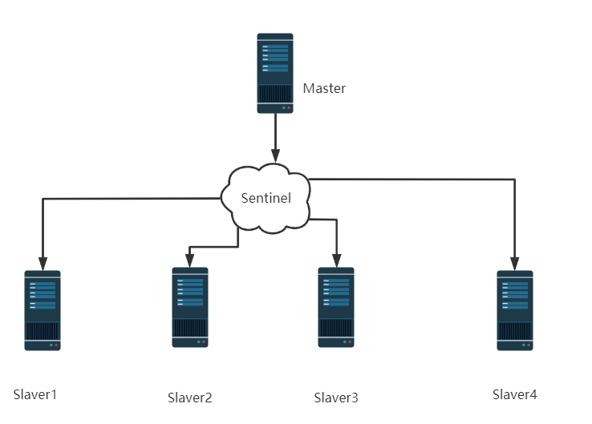
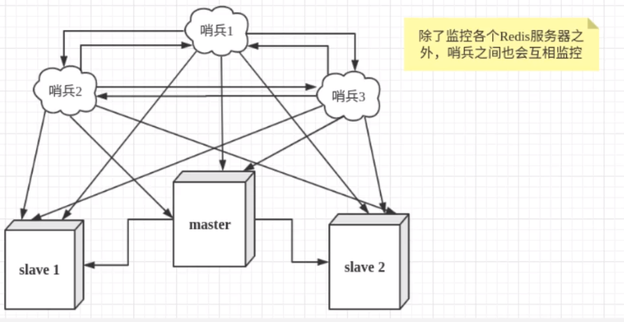
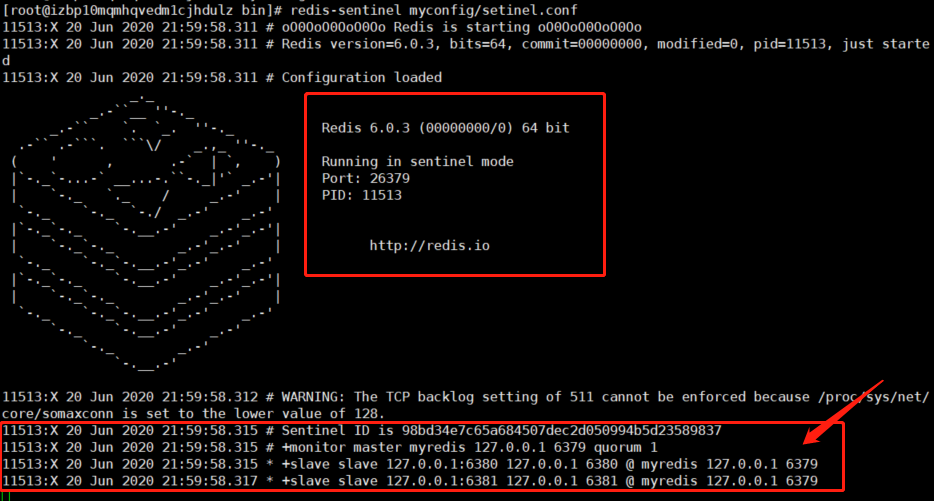
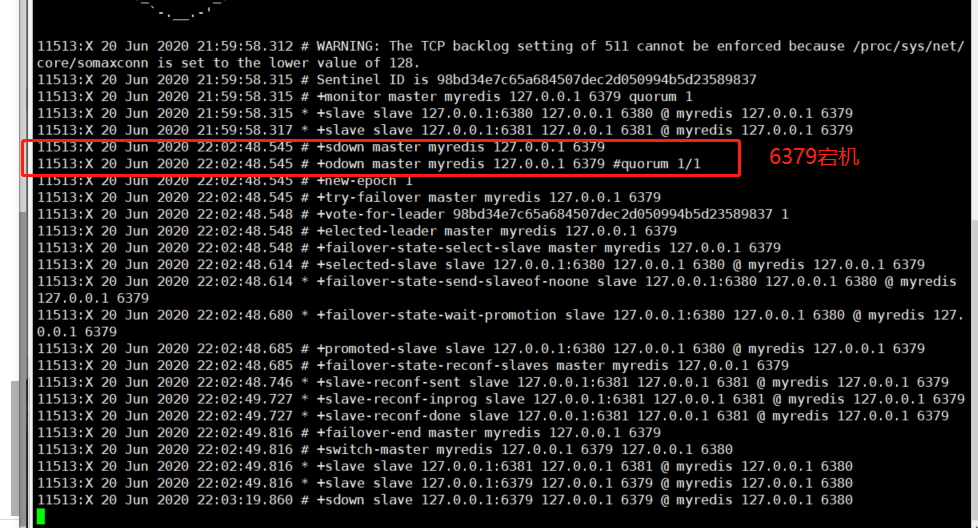
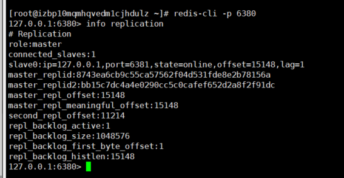
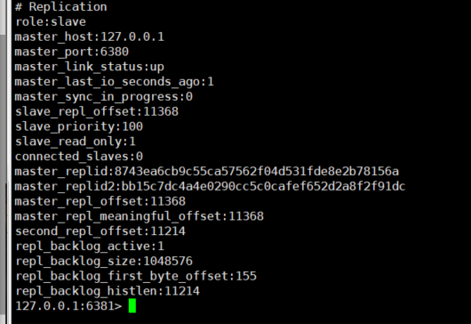
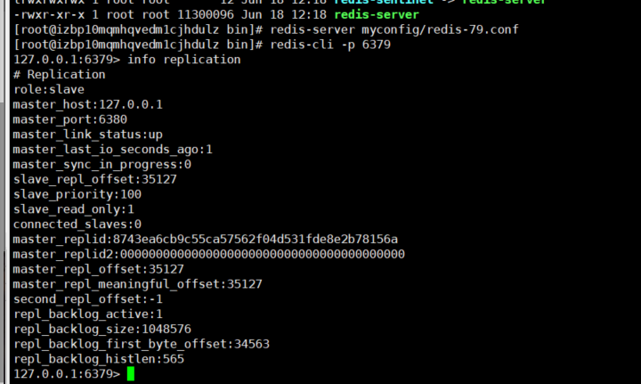

Redis（四）主从复制
概念
主从复制，是指将一台Redis服务器的数据，复制到其他的Redis服务器，前者成为主节点（master）后者成为从节点（slave）；数据的复制是单向的，只能由主节点到从节点，Master以写为主，Slave只能读。
默认情况下，每台Redis服务器都是主节点，且一个主节点可以由多个从节点或者没有从节点。但是一个从节点只有一个主节点。
主从复制的作用主要包括
- 数据冗余：主从复制实现了数据的热备份，是持久化之外的一种数据冗余方式
- 故障恢复：当主节点出现问题，可以由从节点提供服务，实现快速的故障恢复，实际上是一种服务的冗余
- 负载均衡：在主从复制的基础上，配合读写分离，可以由主节点提供写服务，由从节点提供读服务（即写Redis数据时连接主节点，读redis时应用从节点），分担服务器 负载，尤其在读多写少的情况之下。通过多个从节点分担读负载，可以大大提高redis的并发量
- 高可用（集群）的基石：除了上述作用之外，主从复制还是哨兵和集群能够实现的基础，因此说是Redis高可用的基石。
一般来说，要将Redis运用在实际的项目中，只使用一台Redis服务器是不可能的，原因：
- 从结构上，单个Redis服务器会发生单点故障，一台服务器需要处理所有的负载，压力较大
- 从容量上，单个Redis服务器内存容量限制，一般来说，单台Redis最大使用内存不应该超过20G
环境配置
只需要配置从库，不需要配置主库，默认都是主库
1
2
3
4
5
6
7
8
9
10
11
12
13
| 127.0.0.1:6379> info replication
role:master
connected_slaves:0
master_replid:b242cbcae6532b3a74762010786610af9cdefecc
master_replid2:0000000000000000000000000000000000000000
master_repl_offset:0
master_repl_meaningful_offset:0
second_repl_offset:-1
repl_backlog_active:0
repl_backlog_size:1048576
repl_backlog_first_byte_offset:0
repl_backlog_histlen:0
|
复制三个配置文件，修改配置
1、端口号
2、pid名字
3、log文件名字
4、dump.rdb名字
1
2
3
4
5
6
7
8
9
10
11
12
13
14
15
16
17
18
19
20
21
22
23
24
25
26
27
28
29
30
31
32
| [root@izbp10mqmhqvedm1cjhdulz bin]
[root@izbp10mqmhqvedm1cjhdulz bin]
total 45932
-rw-r--r-- 1 root root 2380 Jun 20 21:31 6379.log
-rw-r--r-- 1 root root 114 Jun 20 21:20 dump.rdb
drwxr-xr-x 2 root root 4096 Jun 20 21:30 myconfig
-rwxr-xr-x 1 root root 6397464 Jun 18 12:18 redis-benchmark
-rwxr-xr-x 1 root root 11300096 Jun 18 12:18 redis-check-aof
-rwxr-xr-x 1 root root 11300096 Jun 18 12:18 redis-check-rdb
-rwxr-xr-x 1 root root 6719864 Jun 18 12:18 redis-cli
lrwxrwxrwx 1 root root 12 Jun 18 12:18 redis-sentinel -> redis-server
-rwxr-xr-x 1 root root 11300096 Jun 18 12:18 redis-server
[root@izbp10mqmhqvedm1cjhdulz bin]
[root@izbp10mqmhqvedm1cjhdulz bin]
[root@izbp10mqmhqvedm1cjhdulz bin]
total 45940
-rw-r--r-- 1 root root 2380 Jun 20 21:31 6379.log
-rw-r--r-- 1 root root 2380 Jun 20 21:32 6380.log
-rw-r--r-- 1 root root 2380 Jun 20 21:32 6381.log
-rw-r--r-- 1 root root 114 Jun 20 21:20 dump.rdb
drwxr-xr-x 2 root root 4096 Jun 20 21:30 myconfig
-rwxr-xr-x 1 root root 6397464 Jun 18 12:18 redis-benchmark
-rwxr-xr-x 1 root root 11300096 Jun 18 12:18 redis-check-aof
-rwxr-xr-x 1 root root 11300096 Jun 18 12:18 redis-check-rdb
-rwxr-xr-x 1 root root 6719864 Jun 18 12:18 redis-cli
lrwxrwxrwx 1 root root 12 Jun 18 12:18 redis-sentinel -> redis-server
-rwxr-xr-x 1 root root 11300096 Jun 18 12:18 redis-server
[root@izbp10mqmhqvedm1cjhdulz bin]
root 11466 1 0 21:31 ? 00:00:00 redis-server 127.0.0.1:6379
root 11473 1 0 21:32 ? 00:00:00 redis-server 127.0.0.1:6380
root 11479 1 0 21:32 ? 00:00:00 redis-server 127.0.0.1:6381
root 11488 11125 0 21:32 pts/0 00:00:00 grep --color=auto redis
|
一主二从
目前，所有的都是主节点。只需要配置从机
从机配置
1
2
| 127.0.0.1:6380> slaveof 127.0.0.1 6379
OK
|
1
2
3
4
5
6
7
8
9
10
11
12
13
14
15
16
17
18
19
20
21
22
23
24
25
26
27
28
29
30
31
32
33
34
35
36
37
38
39
40
41
42
43
44
45
46
47
48
49
|
127.0.0.1:6380> info replication
role:slave
master_host:127.0.0.1
master_port:6379
master_link_status:up
master_last_io_seconds_ago:1
master_sync_in_progress:0
slave_repl_offset:0
slave_priority:100
slave_read_only:1
connected_slaves:0
master_replid:bb15c7dc4a4e0290cc5c0cafef652d2a8f2f91dc
master_replid2:0000000000000000000000000000000000000000
master_repl_offset:0
master_repl_meaningful_offset:0
second_repl_offset:-1
repl_backlog_active:1
repl_backlog_size:1048576
repl_backlog_first_byte_offset:1
repl_backlog_histlen:0
127.0.0.1:6381> slaveof 127.0.0.1 6379
OK
127.0.0.1:6381> info replication
role:slave
master_host:127.0.0.1
master_port:6379
master_link_status:up
master_last_io_seconds_ago:1
master_sync_in_progress:0
slave_repl_offset:168
slave_priority:100
slave_read_only:1
connected_slaves:0
master_replid:bb15c7dc4a4e0290cc5c0cafef652d2a8f2f91dc
master_replid2:0000000000000000000000000000000000000000
master_repl_offset:168
master_repl_meaningful_offset:154
second_repl_offset:-1
repl_backlog_active:1
repl_backlog_size:1048576
repl_backlog_first_byte_offset:155
repl_backlog_histlen:14
|
1
2
3
4
5
6
7
8
9
10
11
12
13
14
15
16
17
18
|
127.0.0.1:6379> info replication
role:master
connected_slaves:2
slave0:ip=127.0.0.1,port=6380,state=online,offset=182,lag=1
slave1:ip=127.0.0.1,port=6381,state=online,offset=182,lag=1
master_replid:bb15c7dc4a4e0290cc5c0cafef652d2a8f2f91dc
master_replid2:0000000000000000000000000000000000000000
master_repl_offset:182
master_repl_meaningful_offset:0
second_repl_offset:-1
repl_backlog_active:1
repl_backlog_size:1048576
repl_backlog_first_byte_offset:1
repl_backlog_histlen:182
127.0.0.1:6379>
|
永久配置主从
REPLICATION
直接在配置文件中修改该字段。
主从复制的细节
- 主机可以写，从机不能，只能读
- 主机中的所有数据和信息，都自动被从机保存。
1
2
3
4
5
6
| 127.0.0.1:6380> keys *
1) "k1"
127.0.0.1:6380> get k1
"v1"
127.0.0.1:6380> set k2 v2
(error) READONLY You can't write against a read only replica.
|
- 主机断开连接，从机依旧连接到主机，重新连接之后，正常工作。
复制原理
Slave启动成功之后连接到master后会发送一个sync命令
Master接到命令，启动后台的存盘进程，同时收集所有接收到的用于修改数据集的命令，在后台进程执行完毕之hi偶，master将传送整个数据文件到slave，并完成一次完全同步。
全量复制：slave服务在接收到数据库文件数据后，将其存盘并加载到内存中
增量复制：Master继续将新的所有收集到的修改命令依次传递个slave，完成同步
但是要重新连接master，一次完全同步（全量复制）将被自动执行。
哨兵模式（重点）
概述
主从切换技术的方法是：当主服务器宕机之后，需要手动把一台从服务器切换为主服务器，这就需要人工干预，费时费力，同时会造成一段时间内服务不可用。更多时候，需要考虑使用哨兵模式。
哨兵模式是一种特殊的模式，首先Redis提供哨兵的命令，哨兵是一个独立的进程，作为进程，独立运行。原理是哨兵通过发送命令，等待Redis服务器响应，从而监控运行的多个Redis实例
在这里，烧饼的两个作用
- 通过发送命令，让Redis服务器返回监控器运行状态信息，包括主从服务器
- 当哨兵监测到master宕机，会自动将slave切换成master，然后通过发部订阅模式通知其他的从服务器，修改配置文件，切换主机。

然而一个哨兵进程对Redis服务器进行监控，可能会 出现问题，为此，我们可以使用多个哨兵进行监控。各个哨兵之间还会进行监控

假设主服务器宕机，哨兵1先检测到这个结果，系统并不会马上进行failover过程，仅仅是哨兵1主观的认为主服务器不可用，这个想象称为主观下线。当后面的哨兵也检测到主服务器不可用，并且数量达到一定的值时，那么哨兵之间就会进行一次投票，投票的结果由一个哨兵发起，进行failover（故障转移）操作。切换成功周，就会通过发布订阅模式，让各个哨兵把自己监控的从服务器实现切换主机，这个过程称为客观下线。
配置哨兵配置文件sentinel.conf
1
2
|
sentinel monitor myredis 127.0.0.1 6379 1
|
后面的数字1，代表主机挂了，slave投票看让谁替换成为主机，票数最多的，成为主机
启动哨兵
1
| redis-sentinel myconfig/setinel.conf
|

主机宕机


发现主机已经变为6380

如果主机回来了，只能成为slave
